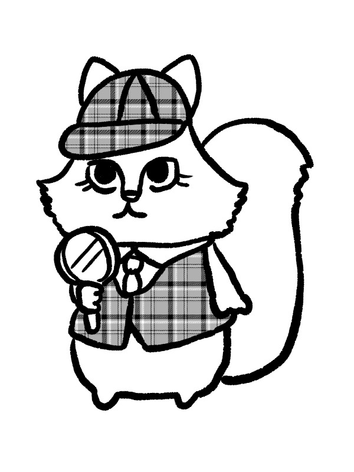
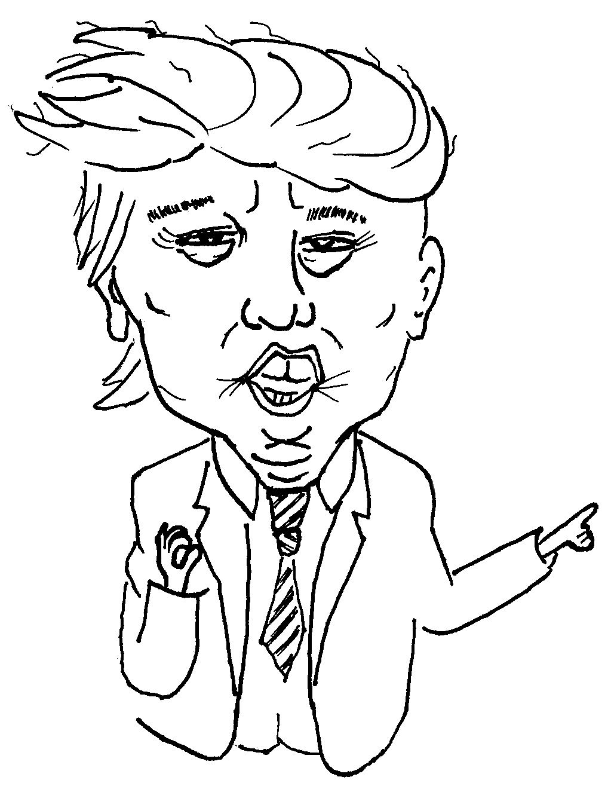
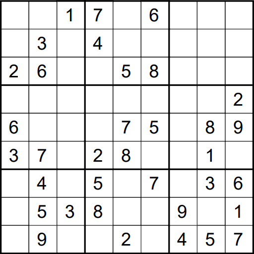

Apollo News
Issue #1
August 30, 2019
Soma Nomaoi
Last month was Soma's biggest festival: Soma Nomaoi. On Saturday the 27th, there were parades in Soma, Odaka, and Kashima. People from Soso area dressed up as soldiers and samurai. They marched and rode horses in the parades. On Sunday, there were horse races and flag catching. Many people from all over Japan come to see the festival, the races are the most popular event. That night there were fireworks in Odaka. On Monday, in Odaka they have Nomakake (野馬懸) in which men try to catch wild horses and put a rope on it. It’s pretty dangerous because the men often get kicked by the horses. Many people from Soma have never seen the races or the horse-catching. I recommend everyone see them at least once, while they have the chance.
Review: Attack on Titan (Anime)
Attack on Titan (進撃の巨人) has a lot of blood, and a lot of grotesque titans. The titans very strange. After the first season, the animation in this show is very high quality, more like a movie than a TV show. The story, well, the story is crazy. I watch this show in Japanese with no English subtitles. Most of the time I don’t understand the story. But the characters in the story also have no idea, so it’s ok. Like most anime, the story moves very slowly, which is my biggest complaint. In recent episodes, I would get bored and do other things while I was watching.
Rating: 3 out of 5 bowls of ramen


Useful Phrase
“What’s up?”
Meaning:「何している？」
や「最近、何かあった？」
や「かわったことは？」
や「どうしたの？」など
When to use: When you greet someone.
Who to use with: Friends and family.
How to respond: People usually say “Nothing.” or “Not much.”
Example conversation:
Peter: Hey Mary, what’s up?
Mary: Nothing, what’s up with you?
Peter: Not much, I’m doing some homework.
Difficult Words
-
dress up as ~
-
～に仮想する
-
march
-
行進する
-
strange
-
変な
-
quality
-
質
-
season
-
期；シーズン
-
subtitles
-
字幕
-
have no idea
-
全くわからない
-
complaint
-
文句
-
get bored
-
退屈する
-
share
-
共有する

Art Corner
Art Corner
Puzzle
Riddle #1
Four large people share one small umbrella but no one gets wet. Why?
Answer:
Difficult Words
-
greet
-
挨拶する
-
useful
-
便利な；有用な
-
wild
-
荒っぽい；野生
-
phrase
-
フレーズ
-
pretty
-
かなり
-
respond
-
返事する；答える
-
riddle
-
謎々
-
bucks
-
ドル
-
recommend
-
勧める
-
to suck at ~
-
～が下手